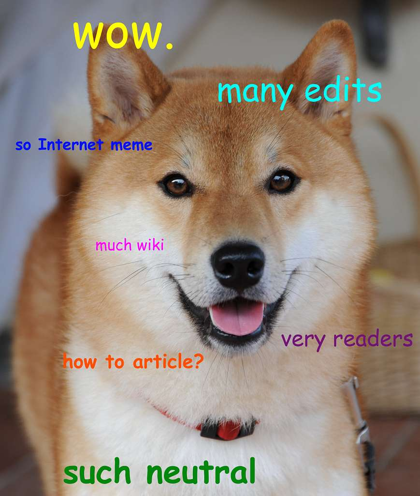
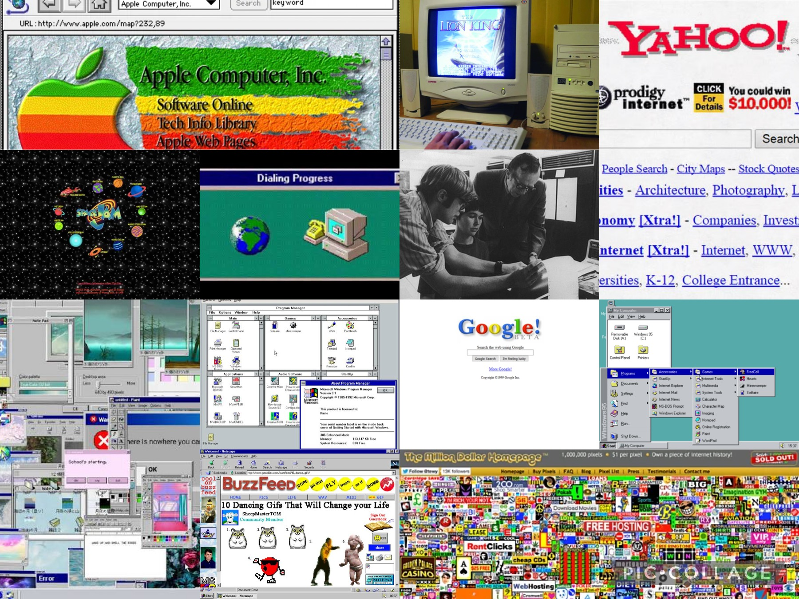
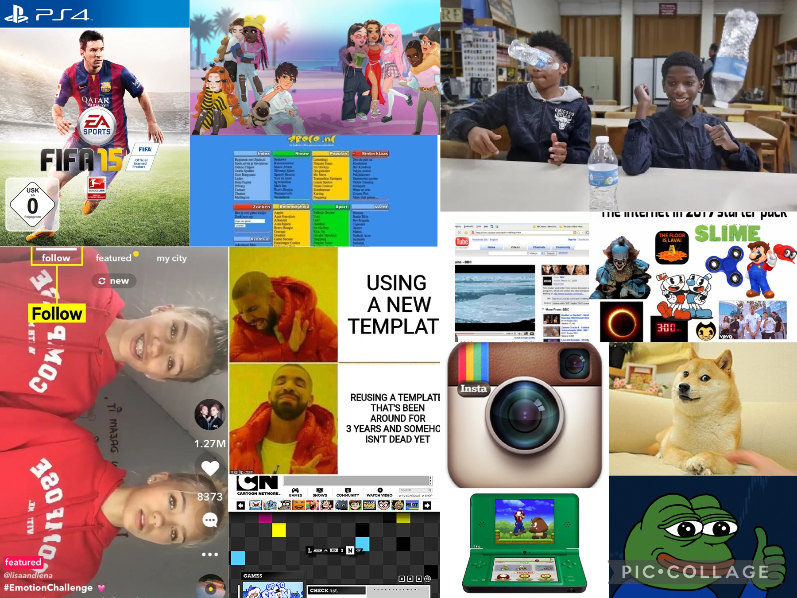
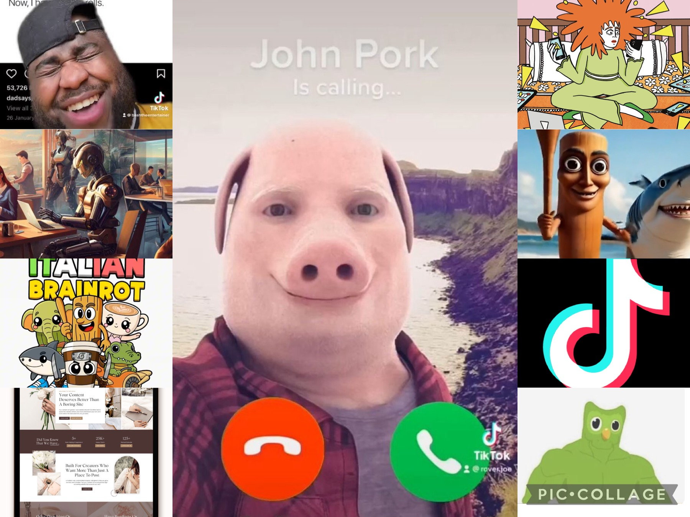
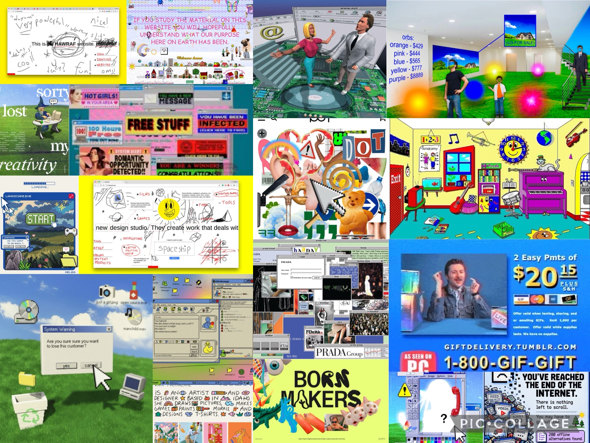
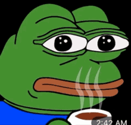

class: center, middle <!-- In deze textarea kan je in Markdown de slides aanpassen, zie https://github.com/gnab/remark/wiki voor alle mogelijkheden! --> # MY BRAIN IS 37 TABS OPEN ### Een chaotische reis door internet cultuur Van het oude internet tot de brainrot van nu. --- # Why the internet? ik vind internetcultuur interessant omdat het constant verandert. Van oude, funky websites tot memes en TikTok. Vooral de chaos, humor en nostalgie spreken mij aan. <p></p> --- # 10 links 1. https://www.cameronsworld.net/ 2. https://gifcities.org/ 3. https://neal.fun/internet-artifacts/ 4. https://www.webdesignmuseum.org/ 5. https://v1.windows93.net/ 6. https://giveupinternet.com/blog/memes-of-the-2010s/ 7. https://moviestarplanet.com/nl/ 8. https://neal.fun/stimulation-clicker/ 9. https://cat-bounce.com/ 10. https://knowyourmeme.com/memes/italian-brainrot-ai-italian-animals? --- # The internet before me Het internet uit de jaren 90 en 2000. Denk aan Windows 98, GeoCities, pixelart en GIF's. Ik vind vooral de chaotische en persoonlijke uitstraling interessant. <p></p> --- # The internet that raised me Het internet waarmee ik ben opgegroeid. YouTube, MovieStarPlanet, online games, memes en Musical.ly. Dit deel draait om mijn eigen internetnostalgie. <p></p> --- # The internet that fried my brain Van TikTok tot de meest random memes. Internet wordt steeds sneller en chaotischer. Soms voelt mijn hoofd als 37 tabbladen tegelijk. <p></p> --- <img src="./2.JPG" style="width: 100%; height: 100%; object-fit: cover; position: absolute; top: 0; left: 0;"> --- <p></p> --- # The internet lore Van funky websites van vroeger tot de brainrot van nu. Ik laat mijn kijk op internetcultuur zien met eigen herinneringen, memes en GIFS <p></p> <!-- Laat onderstaande staan anders breekt je presentatie -->